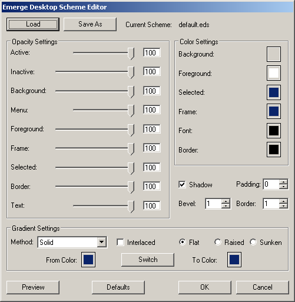

| About |
A Scheme File is a simple text file (editable with Notepad) with the extension .eds (short for emerge desktop scheme) and usually is located on the Schemes folder (see Directory Structure).
This will set the transparency/opacity and colour of several elements of the applets, enable or disable a drop shadow, set the width of the bevel, border and icon padding, and also to set the colours and gradient type for the applet's background.
| Configuration |
The Emerge Desktop Scheme Editor dialog box
Opacity Settings
Active: 20-100 (Default 100) - Sets the opacity of the applet when it has focus. 0 is transparent and 100 opaque
Inactive: 0-100 (Default 100) - Sets the opacity of the applet when it does not have focus. 0 is transparent and 100 opaque
Background: 0-100 (Default 100) - Sets the opacity of the applet's background. 0 is transparent and 100 opaque
Menu: 20-100 (Default 100) Sets the opacity of the menu. 0 is transparent and 100 opaque
Foreground: 0-100 (Default 100) Sets the opacity of the foreground windows (the miniatures in VWM). 0 is transparent and 100 opaque
Frame: 0-100 (Default 100) Sets the opacity of the VWM frame. 0 is transparent and 100 opaque
Selected: 0-100 (Default 100) Sets the opacity of the square indicating the active desktop in the VWM and of the Highlight border of the active task in emergeTasks. 0 is transparent and 100 opaque
Border: 0-100 (Default 100) Sets the opacity of the applet's border. 0 is transparent and 100 opaque
Text: 20-100 (Default 100) Sets the opacity of the emergeCommand text. 0 is transparent and 100 opaque
Color Settings
Note: Pressing shift while left clicking on any of the coulored buttons sets the colour to the default defined by the Windows colour scheme
Background: Sets the colour of the applet's background (Default: Set by Windows color scheme)
Foreground: Sets the colour of the miniature windows in the VWM (Default: Set by Windows color scheme)
Selected: Sets the colour of the VWM active window and the Highlight border of the active tasks (Default: Set by Windows color scheme)
Frame: Sets the colour of the VWM window border (Default: Set by Windows color scheme)
Font: Sets the colour of the text displayed in emergeCommand (Default: Set by Windows color scheme)
Border: Sets the colour of the applet's border (Default: Set by Windows color scheme)
Other
Shadow: Sets the drop shadow on or off (Default On)
Padding: Sets the width of the area surrounding the icons. (Default 0)
Bevel: Sets the width of the bevel surrounding the applets. (Default 1)
Border: Sets the width of the border surrounding the applets. (Default 1)
Gradient Settings
Method: Defines the direction or geometry of the gradient to be created. Options are: Solid (uses color defined in Background), Vertical (from top to bottom), Horizontal (from left to right), CrossDiagonal (from top right corner to bottom left corner), Diagonal (from top left corner to bottom right corner), Pipecross (from corners to center drawing a 3D pipe cross), Elliptic (from border to center), Rectangle (from edges to center drawing the diagonals), Pyramid (from corners to center drawing a cross). Default: Solid.
Interlaced: Defines if gradient is drawn as alternate darker/lighter bands.
Bevel aspect: Flat (default), Raised (center looks higher than borders, like a button), Sunken (center looks lower than borders, like an ashtray :) )
From Color: defines the starting colour for the gradient. Pressing Shift while left clicking on the coulored button sets the colour to the default defined by the Windows colour scheme
To Color: defines the ending colour for the gradient. Pressing Shift while left clicking on the coulored button sets the colour to the default defined by the Windows colour scheme
The Switch button, switches the From and To colours.
| Usage |
By default no scheme is loaded so the colours shown in an applet are defined by the Windows color scheme. To make modifications the user should use the Save As button to save the current settings or Load an existing scheme and then modify and save by pressing Ok. At any moment the user can press Preview button to visualize the modifications. Pressing Cancel will close the Scheme Editor without saving any modifications. The Default button resets all settings to the default values defined by the Windows color scheme.